anleitung
Sasso Radar Tower
Ein eigenständiges ADS-B-Flugradar für ein rundes 4″-Touch-Display. Es zeigt den Luftverkehr in der Umgebung live an — Position, Höhe, Geschwindigkeit, Flugzeugtyp und, wenn verfügbar, Route und Foto. Alle Positionsdaten stammen von adsb.fi, einer offenen, kostenlosen ADS-B-Datenquelle.
Diese Anleitung beschreibt ausschließlich die Bedienung — jeden Bildschirm, jede Geste, jeden Menüpunkt. Ersteinrichtung, Installation und technische Hintergründe sind nicht Teil dieses Hefts.
Die meisten Einstellungen lassen sich sowohl direkt am Gerät als auch bequemer von einem Telefon oder Rechner aus über das Web-Portal ändern — solange dieses Gerät und das andere Gerät im selben WLAN sind. Siehe Seite 24.
Inhaltsverzeichnis
Das Gerät auf einen Blick
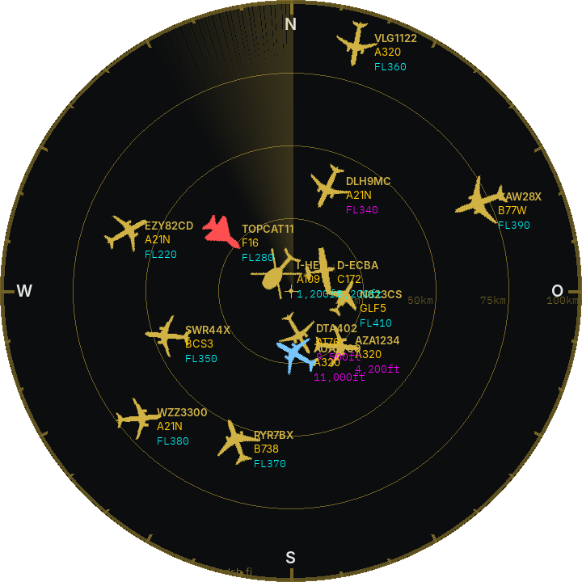
Tippen und Wischen
Der Bildschirm reagiert auf zwei Gesten. Alle Bildschirme dieses Geräts lassen sich allein damit bedienen — es gibt keine physischen Tasten.
Ein kurzer Fingertipp an derselben Stelle. Öffnet die Detailansicht eines Flugzeugs, betätigt Schaltflächen in der Fußzeile und wählt Zeilen im Einstellungsmenü aus.
Ein Finger bewegt sich deutlich in eine Richtung, bevor er den Bildschirm verlässt. Wischgesten wechseln zwischen den Bildschirmen — welche Richtung wohin führt, zeigt die Wischkarte auf der nächsten Seite.
Radar — Anzeige
Der Radar-Bildschirm ist der Ausgangspunkt und zeigt den Luftverkehr im eingestellten Radius live. Jedes Flugzeug erscheint als Symbol, gedreht in Flugrichtung; Farbe und Ring zeigen Sonderzustände an (siehe Seite 27).
Die Statuszeile unten links nennt die Anzahl sichtbarer Flugzeuge, den Radius und, falls ein Wetter-Schlüssel hinterlegt ist, die aktuelle Temperatur.
Kompassrose, Entfernungsringe, Sweep und Flugzeug-Beschriftung lassen sich einzeln abschalten — siehe Einstellungen → Darstellung, Seite 20.
Radar — Bedienung
Flugdetail — Anzeige
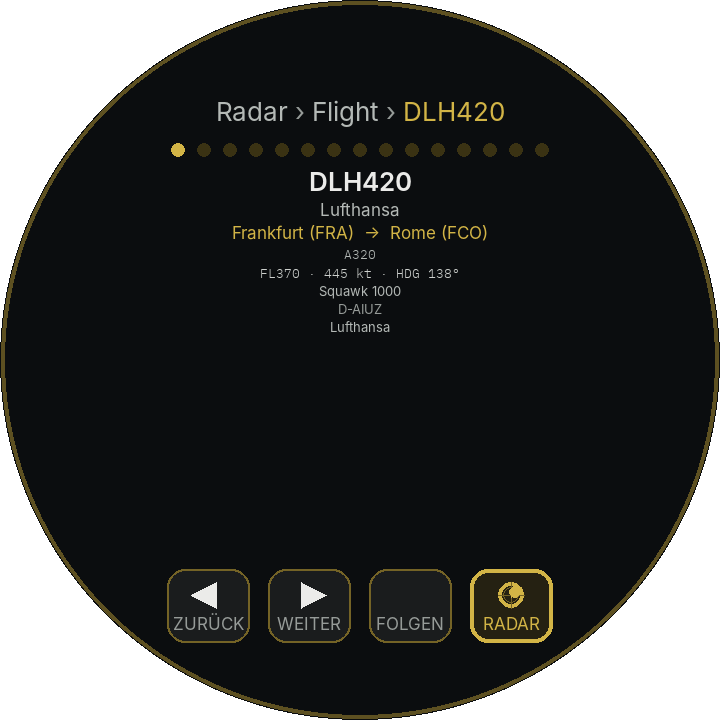
Zeigt alles Bekannte zu einem einzelnen Flugzeug: Foto (falls verfügbar), Fluggesellschaft, Route, Flugzeugtyp, Höhe, Geschwindigkeit, Kurs, Steig-/Sinkrate, Squawk-Code, Registrierung und Halter.
Nicht jedes Feld ist immer bekannt — Route und Foto hängen von externen, kostenlosen Datenquellen ab (siehe Seite 33) und sind nicht für jeden Flug hinterlegt. Das ist normal, kein Fehler.
Trägt ein Flugzeug einen Notfall-Squawk (7500 / 7600 / 7700), erscheint zusätzlich eine rote Warnzeile.
Flugdetail — Bedienung
Vier Schaltflächen in der Fußzeile:
ZURÜCK/WEITER erscheinen nur, wenn mehr als ein Flugzeug sichtbar ist. Wird der angezeigte Flug bereits verfolgt, steht dort STOPP statt FOLGEN.
Verfolgter Flug — Anzeige
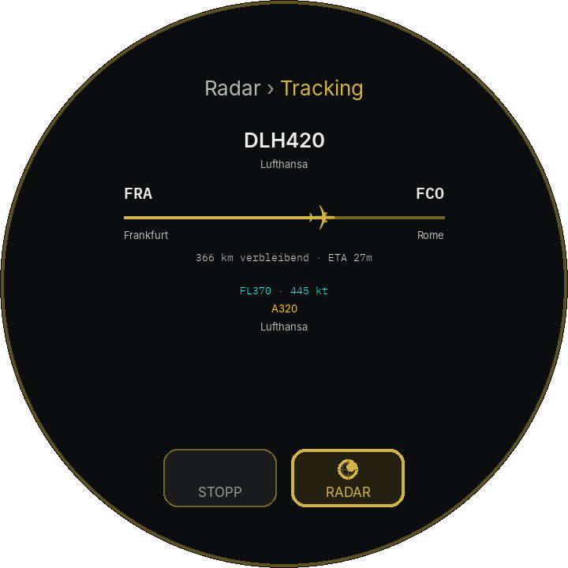
Zeigt einen einzelnen, ausgewählten Flug dauerhaft an — auch wenn zwischendurch andere Bildschirme geöffnet werden. Ein Fortschrittsbalken mit Start- und Zielflughafen zeigt die Position entlang der Route, dazu verbleibende Entfernung und geschätzte Ankunftszeit.
Einen Flug verfolgen — drei Wege:
Verfolgter Flug — Sonderfälle
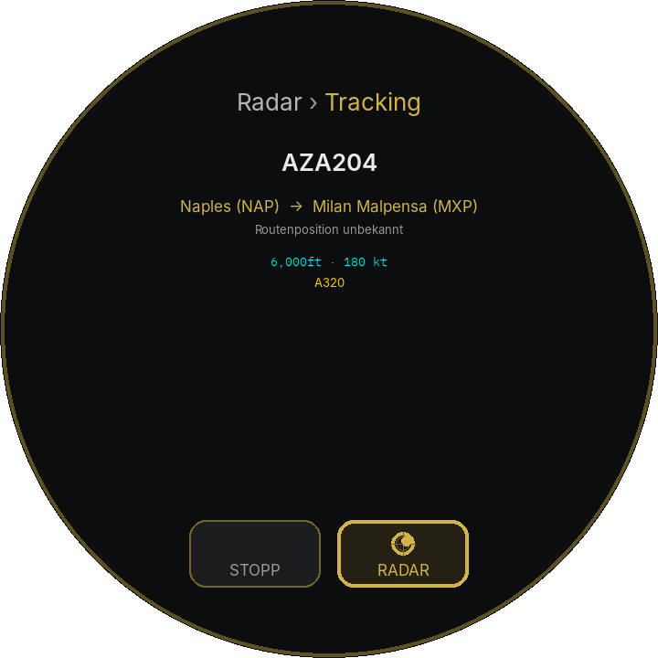
Vier Fälle, in denen der Bildschirm vom Normalbild abweicht, aber nie leer bleibt:
Uhr
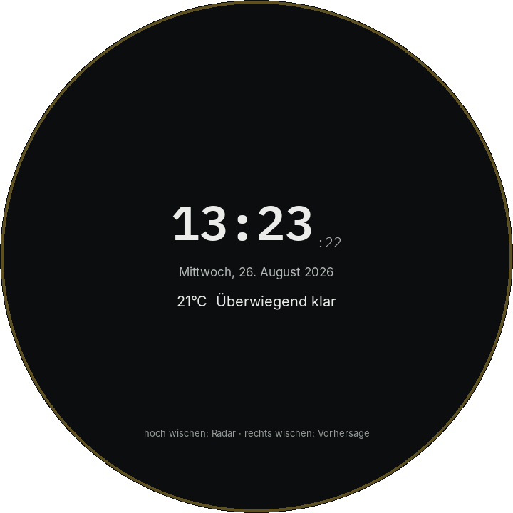
Uhrzeit, Datum und — sofern ein Wetterschlüssel hinterlegt ist — Temperatur und Wetterlage in einer Zeile. Erscheint auch von selbst, wenn längere Zeit kein Flugzeug sichtbar war (einstellbar unter Einstellungen → Anzeige → Automatisch zur Uhr).
Wetter
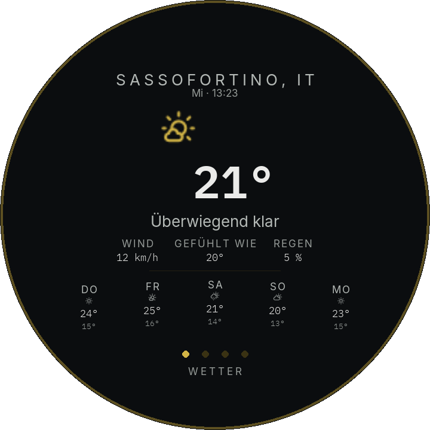
Aktuelle Temperatur, gefühlte Temperatur, Wind und Niederschlagswahrscheinlichkeit, darunter eine 5-Tage-Vorschau. Erreichbar per Wischen nach rechts von der Uhr, zurück per Wischen nach links oder unten.
Ohne hinterlegten Wetter-Schlüssel bleibt die Kopfzeile stehen, die Wetterblöcke werden durch einen Hinweis ersetzt — kein leerer oder abstürzender Bildschirm.
Info
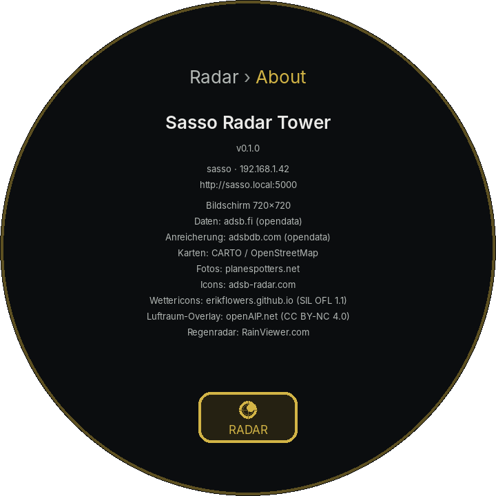
Versionsnummer, Gerätename und IP-Adresse, die Adresse des Web-Portals sowie eine kurze Liste der genutzten Datenquellen. Erreichbar per Wischen nach oben vom Radar, zurück über die Schaltfläche RADAR.
Nützlich, um schnell die Portal-Adresse abzulesen, ohne den Router oder ein anderes Gerät zu bemühen.
WLAN einrichten
Erscheint automatisch, wenn das Gerät keine WLAN-Verbindung hat — oder manuell über Einstellungen → System → WLAN einrichten.
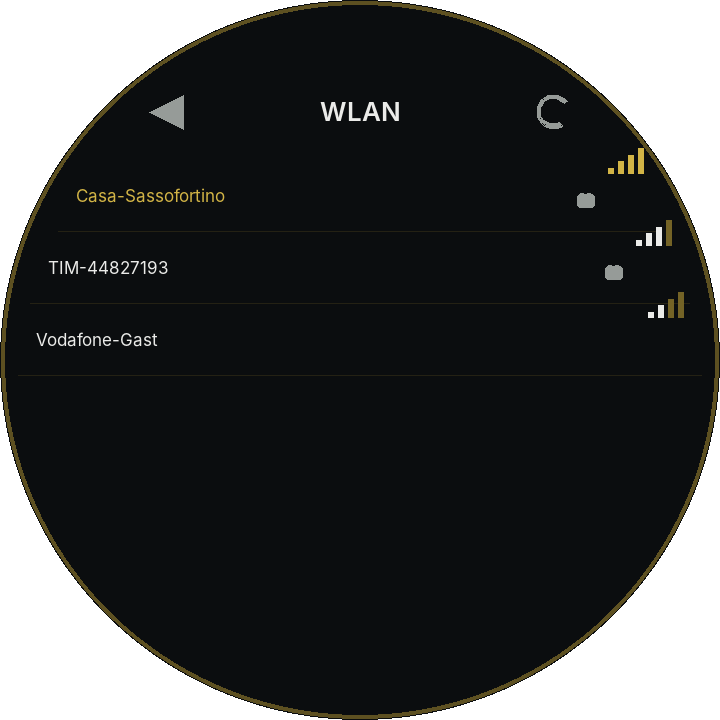
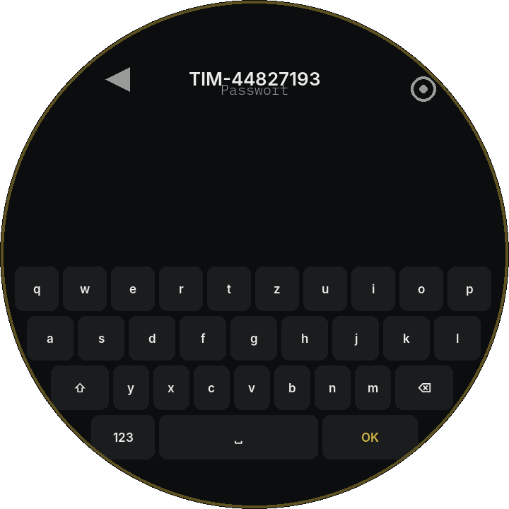
Aufbau & Bedienelemente
Öffnen per Wischen nach links (vom Radar oder von der Uhr). Zwei Ebenen: eine Wurzelliste mit sieben Bereichen, darunter je ein Untermenü. Zurück per Wischen nach rechts oder über den Pfeil oben links — beides eine Ebene zurück, von der Wurzel direkt zum Radar. Jede Änderung wird sofort übernommen, es gibt keine Speichern-Schaltfläche.
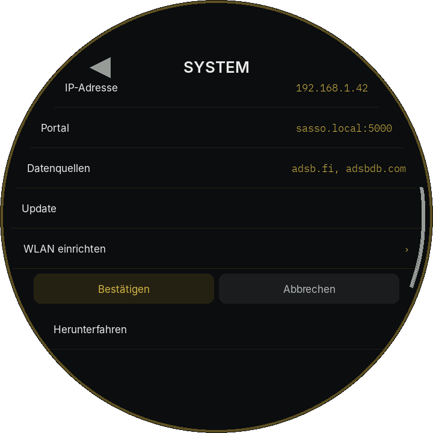
Karte
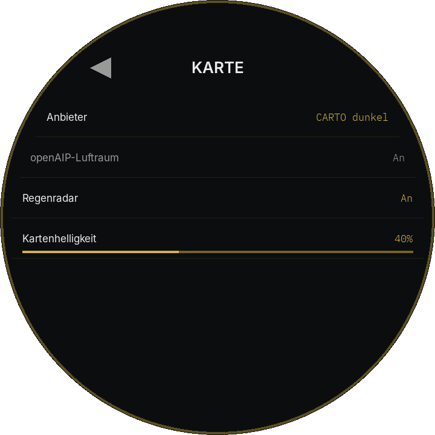
Standort & Einheiten
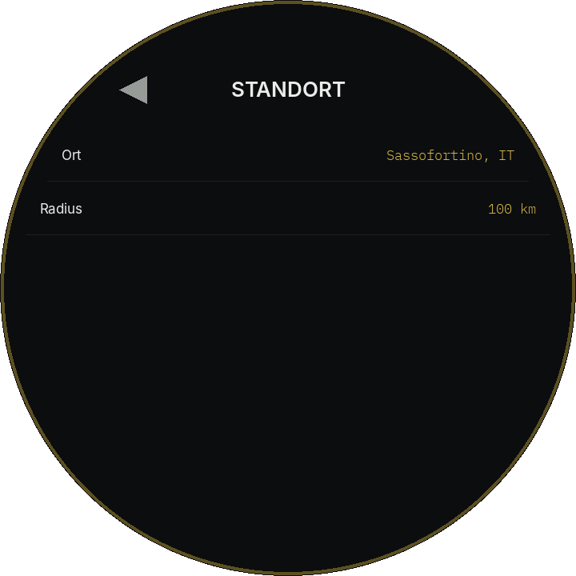
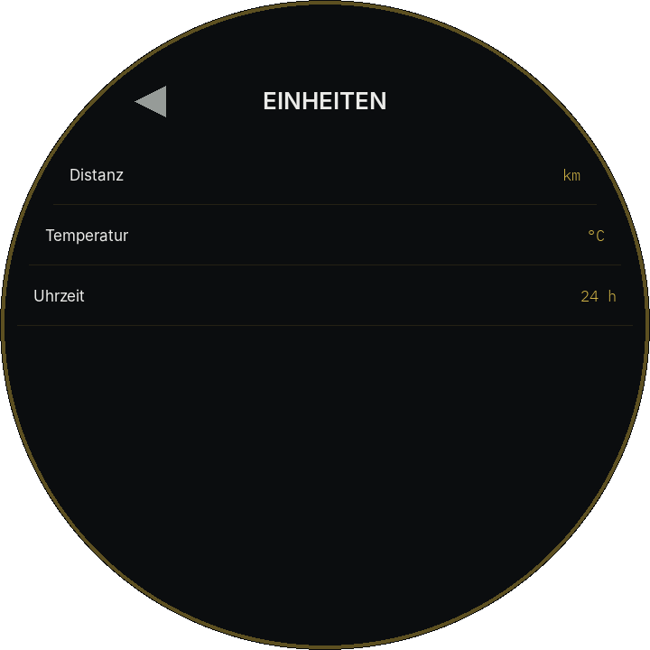
Darstellung
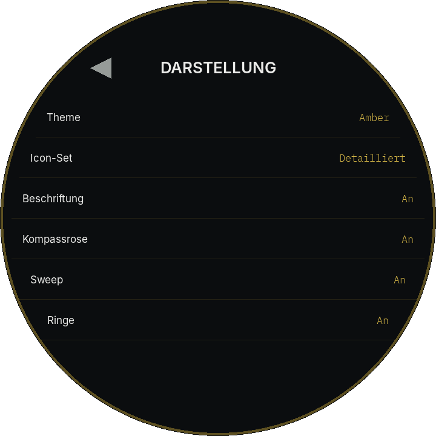
Filter
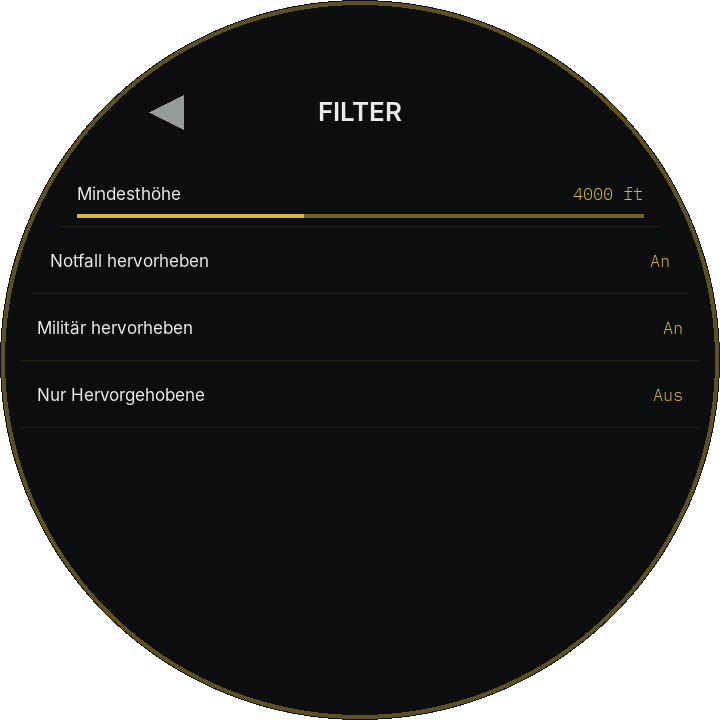
Anzeige
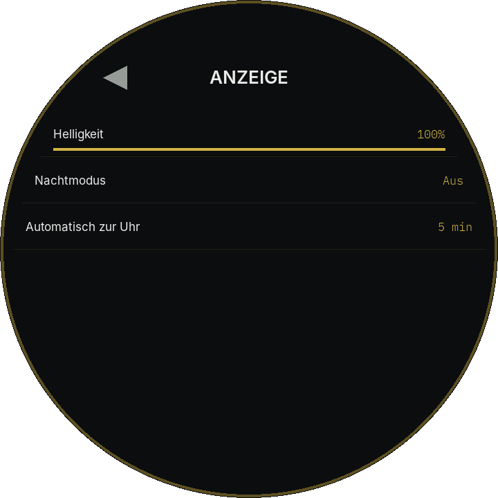
System
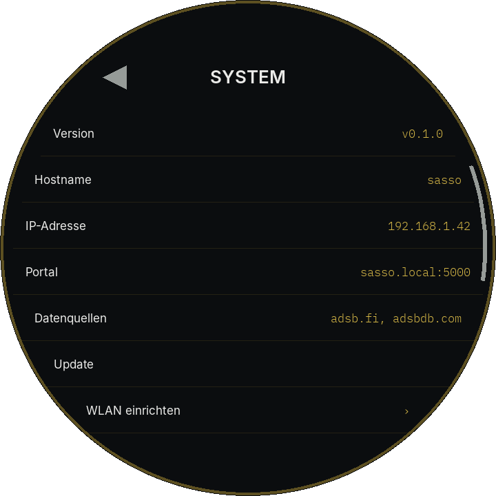
Aufrufen
Von jedem Telefon, Tablet oder Rechner im selben WLAN aus, im Browser:
http://sasso.local:5000
Die Adresse steht auch am Gerät unter Info (Seite 15). Löst der Browser den .local-Namen nicht auf, die IP-Adresse von derselben Stelle verwenden.
Kein Internetzugang nötig — das Portal läuft ausschließlich im lokalen Netzwerk.
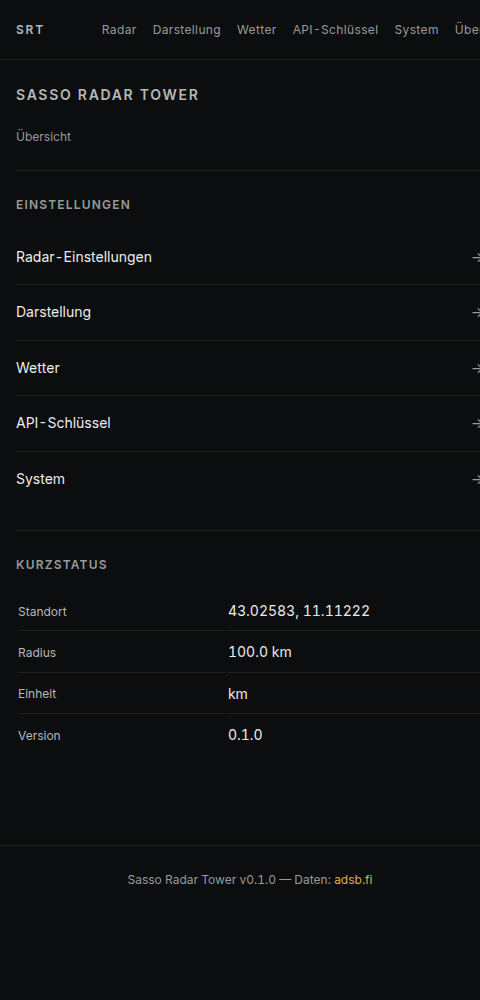
Radar & Darstellung
Alle Einstellungen aus dem Gerätemenü stehen auch hier — bequemer zu tippen, mit denselben Auswirkungen (Änderungen werden innerhalb von etwa zwei Sekunden auch am Gerät übernommen).
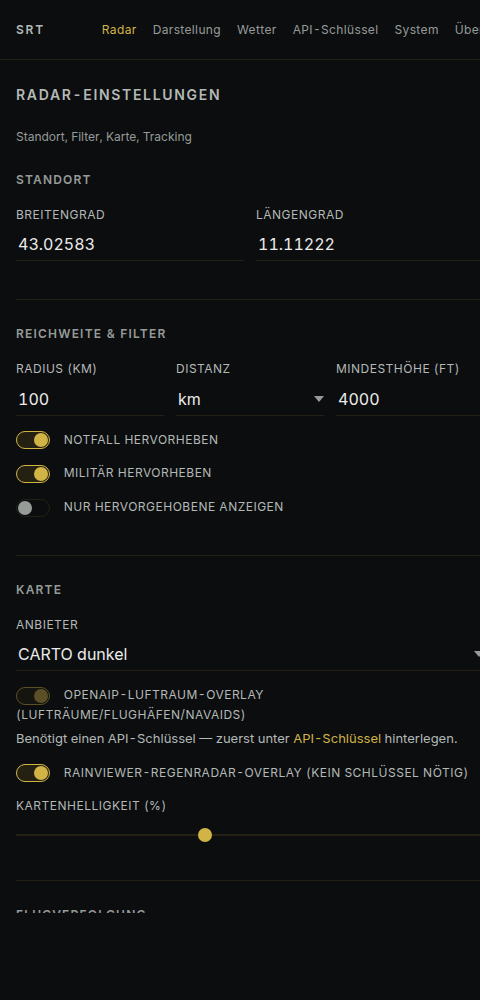
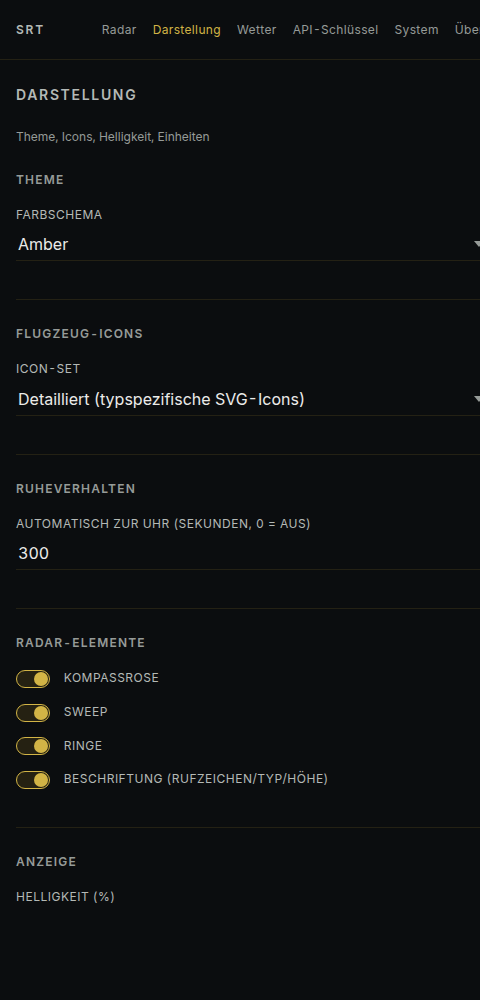
Nur im Portal
Das Gerätemenü verzichtet bewusst auf freie Textfelder — diese vier Dinge lassen sich deshalb ausschließlich hier einrichten:
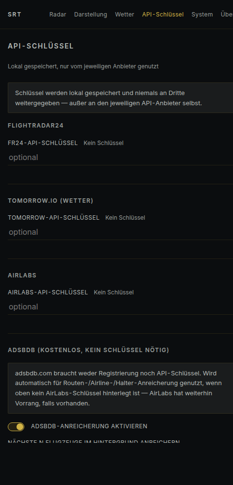
Symbole und Farben

Militär- und Notfall-Hervorhebung lassen sich unter Einstellungen → Filter einzeln abschalten.
Höhen- und Statusanzeigen
Flugfläche (FL) = Höhe in hundert Fuß, Luftfahrt-Konvention oberhalb der Übergangshöhe.
14 Flugzeuge · 100km Reichweite · 21°C · adsb.fi
International genormte Codes, vom Gerät nur angezeigt — keine eigene Bewertung oder Alarmierung darüber hinaus.
Wenn etwas nicht stimmt
Prüfen: Filter → Nur Hervorgehobene aus? Filter → Mindesthöhe nicht zu hoch? Radius groß genug für die Gegend? An sehr ruhigen Orten ist wenig bis kein Verkehr auch einfach der Normalfall.
Kein Tomorrow.io-Schlüssel hinterlegt. Im Portal unter API-Schlüssel nachtragen (Seite 26) — kostenloses Konto bei Tomorrow.io genügt.
Kein Fehler — nicht jeder Flug ist in den kostenlosen Zusatzdatenbanken hinterlegt. Höhe, Geschwindigkeit und Position kommen unabhängig davon immer direkt von adsb.fi.
Die WLAN-Verbindung wurde unterbrochen. Netz erneut auswählen (Seite 16) — eine vorher funktionierende Verbindung wird zudem einige Minuten toleriert, bevor dieser Bildschirm überhaupt erscheint (z. B. bei einem Router-Neustart).
Manche Router/Geräte lösen .local-Namen nicht auf. Stattdessen die IP-Adresse verwenden, abzulesen unter Einstellungen → System → IP-Adresse am Gerät.
Ein Kartenwechsel im Hintergrund kann kurz Zeit brauchen; der Sweep läuft dabei normal weiter. Bleibt das Gerät dauerhaft ohne Reaktion, über Einstellungen → System → Neustart neu starten oder kurz vom Strom trennen.
Das Gerät setzt sich in diesem Fall automatisch auf den vorherigen, funktionierenden Stand zurück, bevor irgendein Dienst angefasst wird — es bleibt in jedem Fall benutzbar. Die letzte Meldung dazu steht auf der Portal-Systemseite.
Gesten
Menübaum
Karte
Anbieter · openAIP-Luftraum · Regenradar · Kartenhelligkeit
Standort
Ort · Radius
Darstellung
Theme · Icon-Set · Beschriftung · Kompassrose · Sweep · Ringe
Filter
Mindesthöhe · Notfall hervorheben · Militär hervorheben · Nur Hervorgehobene
Anzeige
Helligkeit · Nachtmodus · Nachtmodus ab/bis · Nachthelligkeit · Automatisch zur Uhr
Einheiten
Distanz · Temperatur · Uhrzeit
System
Version · Hostname · IP-Adresse · Portal · Datenquellen · Update · WLAN einrichten · Neustart · Herunterfahren
Datenquellen und Nachweise
Lizenz
Sasso Radar Tower ist eigenständig entwickelte Software, lizenziert unter der MIT-Lizenz.
Copyright © 2026 Lukas Isenberg
Permission is hereby granted, free of charge, to any person obtaining a copy of this software and associated documentation files, to deal in the Software without restriction, subject to the inclusion of the above copyright notice in all copies or substantial portions of the Software. Provided „as is", without warranty of any kind.
Die auf Seite 33 genannten Drittanbieter-Datenquellen unterliegen eigenen, unabhängigen Nutzungsbedingungen, die von dieser Lizenz unberührt bleiben.
Sasso Radar Tower · Bedienungsanleitung · gesetzt in Inter · erstellt aus dem eigenen Quellcode